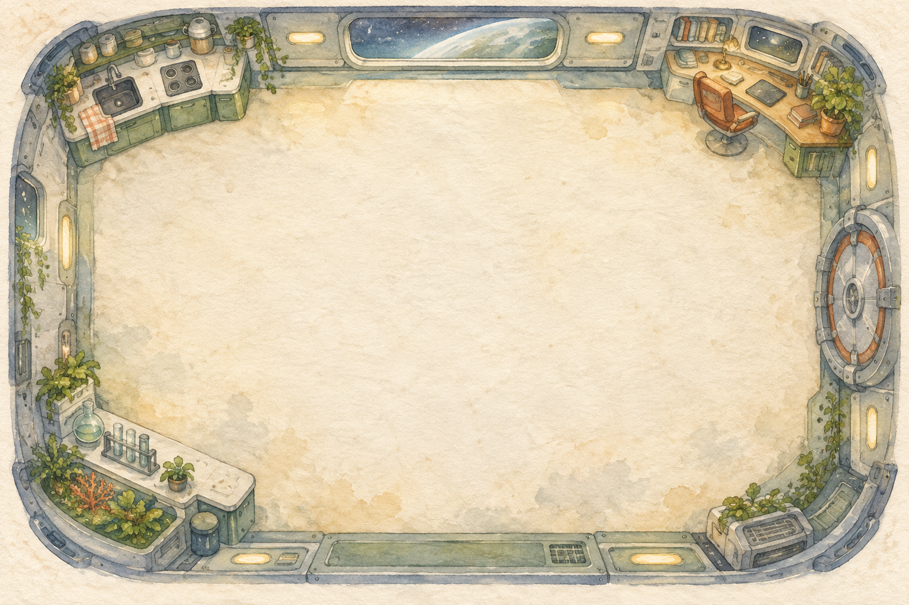

Последняя смена
Маленькая история о важных вещах

Кухня
Капитан
Лаборатория
Кликни по полу — робот пойдёт туда
В рукахПока ничего
W A S D / стрелки — движениеИли кликни на вещь, чтобы подойтиПар: безопасно
Маленькая история о важных вещах
